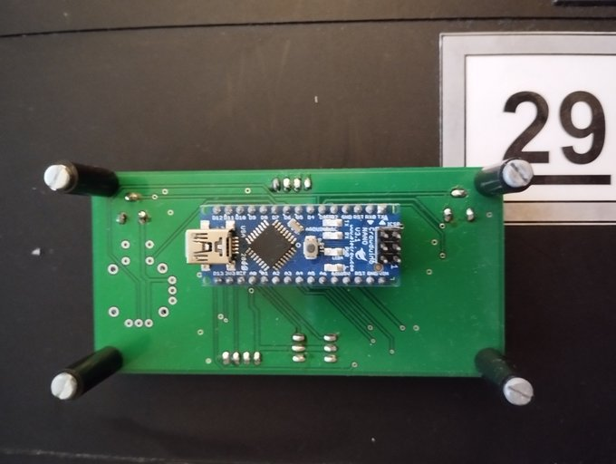
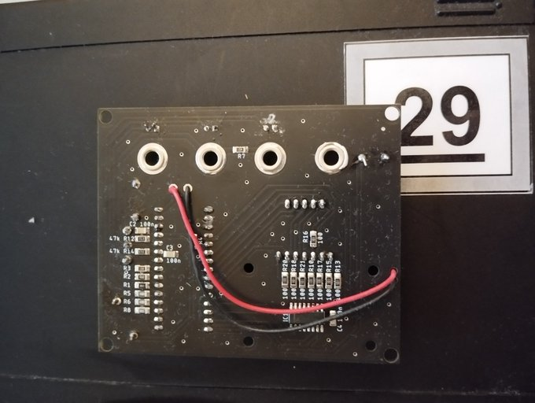
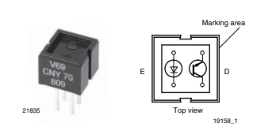
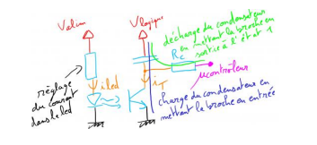
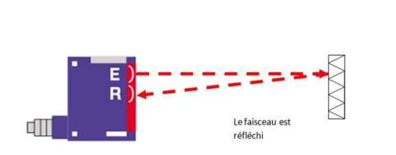

Collection — Premiere annee
BUT1 — fondamentaux GEII
Premiere annee centree sur les bases du metier : lecture de schemas, soudure, choix de composants, analyse fonctionnelle, prototypes et premiers livrables techniques.
Projet d'immersion — 1re annee


Durant les trois jours d'atelier consacres a ce premier projet, j'ai quitte la theorie pour plonger dans le concret :
- Lire et comprendre un schema electrique : dechiffrer symboles, reperer liaisons d'alimentation et de signal, anticiper les points critiques.
- Choisir les composants : comparer boitiers, tolerances et puissances dissipees afin d'assembler un circuit a la fois fiable et economique.
- Apprendre la soudure : poser des composants traversants et CMS, maitriser la temperature du fer et la bonne quantite d'etain pour garantir solidite et conductivite.
Cette courte immersion m'a donne un apercu realiste du terrain industriel : gestion du temps, controle qualite des l'assemblage et premiers tests de mise sous tension. Elle a surtout pose les bases de mon savoir-faire technique, sur lesquelles se sont appuyes tous les projets suivants.
Conception d'un multimetre numerique


Premiere SAE majoritairement orientee informatique embarquee. Ce projet m'a demande de souder l'ensemble des composants (resistances, amplis-op, diviseurs, microcontroleur) sur un PCB pre-grave, puis d'ecrire le firmware qui mesure tension, courant et resistance et l'affiche par multiplexage de LED 7 segments.
Reperes sur le PCB
- A — Connecteurs jack 4 mmPoints d'entree pour les sondes V, A et reference commune
- B — Reseau de resistances CMSPonts diviseurs pour ramener la tension dans la plage 0-3,3 V de l'ADC
- C — Matrice CMS centrale (16 boitiers)ADC + reseau d'ampli-op rail-to-rail : conditionnement avant numerisation
- D — Fils rouge/noir souderCorrectif de routage de derniere minute pour la reference de masse
Prototype multi-cartes

L'equipe devait realiser un petit systeme electronique reparti sur plusieurs cartes, chacune assurant une fonction (alimentation, filtrage, conversion, comparaison, sortie…). Nous disposions uniquement d'un schema de principe, de plaques de prototypage et d'un lot de composants (AOP, diodes, LED, condensateurs, resistances).
Objectif : assembler six modules, les tester un par un, puis les chaîner pour obtenir un fonctionnement global coherent.
Analyse fonctionnelle
Avant de toucher au fer a souder, nous avons reproduit le schema bloc :
- AlimentationStabilise le +5 V
- ConvertisseurAdapte le signal de capteur
- Filtre actifSupprime le bruit haute frequence
- ComparateurDetecte le seuil utile
- Commande logiqueGere la LED d'etat
- SortieEnvoie le resultat vers l'utilisateur
Problemes rencontres et corrections
- Court-circuit +5 V/GNDExces d'etain → retrait + nettoyage a l'alcool
- Signal inverseDiode montee a l'envers → dessoudage, inversion de polarite
- Comparateur sans reponseResistance oubliee → ajout R = 47 kΩ
- LED toujours eteinteMasse absente → fil volant noir ajoute
Chaque correction passait par un test de continuite au multimetre, puis un essai fonctionnel sous 5 V avant d'integrer le bloc suivant.
Robot suiveur de ligne



Ma mission : capteurs photo-reflectifs
Dans ce projet de 3 semaines, chaque membre avait une tache precise : l'un gerait le LIDAR, un autre la PIXY, et moi je m'occupais des capteurs photo-reflectifs CNY70.
Mon role portait sur la partie capteurs, les tests de continuite et la comprehension du comportement de suivi de ligne avec plus ou moins de difficulte.
Apprentissages critiques valides
- AC12.02 — Identifier un dysfonctionnement lors du soudage par tests de continuite
- AC12.03 — Decrire un dysfonctionnement (court-circuit, composant polarise a l'envers)
- AC11.01 — Produire une analyse fonctionnelle (GRAFCET pour le parcours precis)
- AC11.02 — Realiser un prototype (cartes avec CNY70 avant fabrication sur KiCad)
- AC11.03 — Rediger un dossier de fabrication a partir d'un dossier de conception